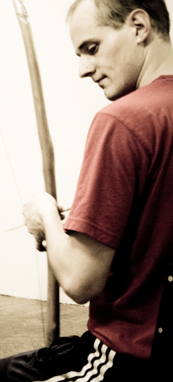
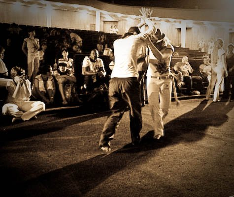
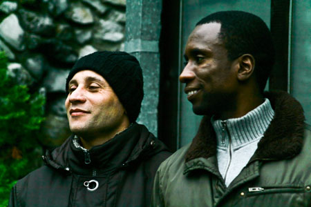

Vadiar — слово о свободе
“Vadiar – это состояние капуэйриста между тупняком и жогой” (Compasso)
Каким бы ни получился этот текст, о чем бы он в итоге ни был, я посвящаю его двум любимым людям.
Одного из них зовут Ден, он живет в Одессе и по утрам ходит к морю приветствовать Йеманжу. У него нет какой-то опредленной Очень Важной Работы, дорогих шмоток в шкафу, распланированных наперед лет. Он любит после хорошей ангольской тренировки выпить пива в доброй компании, учит португальский на досуге и все время поет. Я не знаю, откуда он знает столько песен. Иногда мне кажется, что это поет его сердце, иногда мне кажется, что оно сочиняет эти песни прямо на ходу, и они тут же попадают в твое сердце, за что-то там цепляются, запускают какие-то механизмы и в ответ все в тебе начинает вибрировать. Что интересно – нет особой разницы между тем, поет ли он, сидя за беримбау в Роде, или тихонько напевает мне, пока мы идем по мосту через Днепр в Киеве. Дух вадиасао в нем не просыпается по торжественным случаям, он есть всегда, он постоянно наполняет его движением. Ден настоящий одессит, т.е. = настоящий malicioso. С этой лукавой хитринкой в глазах, со своим одесско-бразильским «камарааа», немного контрабандист, немного портовый житель с мечтой об открытом море, капоэйрист от сердца, он знает толк в хорошем вадиасао.

Второй человек – это Дарья_Дарья. Она приехала из северного города Нур, где полгода стоит полярная ночь, в чуть менее северный Питер, где почти весь год льет дождь. Ее любимое занятие полностью совпадает с любимым занятием всей Бразилии – ничего не делать. Была бы ее воля, она проводила бы все дни в своем холостяцком жилище – спала бы, курила, рисовала, читала и разговаривала с котом. Но каким-то образом в ее жизнь втиснулась капоэйра, которая заставляет шевелиться как минимум для того, чтобы слинять от ударов в Роде. И произошло удивительное – Дарья настолько гармонично вписалась в капоэйру, будто всю жизнь только этим и занималась. Она потрясающий пример того, что не обязательно быть великим акробатом, фантастическим певцом или музыкантом, чтобы играть капоэйру. Достаточно владеть прирожденным чувством вадиасао – даром ничегонеделания, безделия и бродяжничества. Дарья, конечно, будет это отрицать, но я не знаю другого человека, с которым было бы так приятно шататься по летнему городу и лениво играть капоэйру в переулках. В человеке, который обладает вадиасао, есть особенный стиль. Дарья, всегда чуть небрежная, неизменно выглядит потрясающе стильно, как будто все в ней продумано. Дырочки на майке – словно специально, и не скажешь, что сигаретой прожгла. Вытянутые рукава тонкого вязаного свитера – это модно, а вовсе не потому, что она обожает натягивать рукава на пальцы, чтобы было уютнее. Подранные джинсы – понятное дело, что так надо, а вовсе не потому, что ей лень залатать штаны, которые порвались во время прошлой игры на пирсе. С ней я чувствую себя самым свободным человеком на свете. С ней я вдруг понимаю, что весь мир наш и все время наше, сиди себе на солнышке да напевай песенки на порту.

А еще есть песня, которую мой учитель поет лучше всех на свете, потому что это именно ЕГО песня. И в ней изумительно поется про vadiacao. Но когда ученики просят перевести текст, учитель смущенно пожимает плечами: „что такое vadiar? Ну это… ну вадиярить же!“. Действительно, адекватному переводу слово не подчиняется, очень неохотно объясняется и лучше всего оно ощущается в Игре. Итак, вот песня (термин vadiar намеренно не переводится):
Coro:
Eu vim pra vadiar no berimbau
eu vim pra vadiar no jogo
eu vim pra vadiar no canto e na palma
eu vim ver capoeira vadiar
Vadeia berimbau me da o som
transmita toda sua energia
ao seu comando a roda vai comecar
pois hoje e dia de alegria
E o capoeira sai para a vadiacao
e um bom jogo nos arrepia
e armada, cabecada, martelo e pisao
mais sem atropelo e na harmonia
E o canto embala o coracao
e historia e lemento e poesia
e a voz de um guerreiro solta no ar
e a palma animando a bateria
Я пришел повадиярить с беримбау,
Я пришел повадиярить и поиграть,
Я пришел повадиярить, попеть и похлопать
Я пришел смотреть как капуэйристы вадиярят
Когда я вадиярю, беримбау звучит
Он отдает свою энергию
И по его команде начинается рода
Поэтому сегодня радостный день.
И капуэйрист идет вадиярить
Его прекрасная игра вызывает дрожь
Армада, кабесада, мартелу и пизау,
Совсем без спешки и так гармонично
Пение очаровывает сердце.
В нем и история, и плач и поэтичность.
И голос воина звенит в воздухе
И хлопки подбадривают батерию
Тем не менее ученики, разумеется, не довольствуются вариантом «непереводимая игра слов» и хотят докопаться до смысла и лингвистических глубин. Отсылка к словарю кое-что объясняет, но процентов так на 30:
vadiar
1) бродяжничать, скитаться, бродить
2) бездельничать, лодырничать
Этим значением слово обросло в сложные для капоэйры времена, и равно использовалось как теми, кто ее любил и практиковал, так и теми, кто ее осуждал и преследовал. Первые употребляли слово vadiacao в значении «замечательно проводить время за ничегонеделанием, наслаждаться свободным временем и жизнью, шататься по городу с беримбау на плече, etc.», вторые понимали под vadiacao лодырничание, праздношатание и в общем асоциальное прожигание жизни без пользы обществу, а то и ей во вред. Это одна из версий. Такой перевод уже больше радовал начинающих учеников, но совсем не радовал меня. Я решила порасспрашивать разных бразильцев и, возможно, узнать больше вариантов перевода коварного словечка. Прекрасный случай предоставился на семинаре в Сербии, на большой тусовке группы Senzala. Каждый новый выловленный капоэйрист радовал новой трактовкой. О каждом по порядку.
Contra Mestre Luis Claudio говорил исключительно на родном языке, переводчиков рядом не было, поэтому что осталось в моей ошалевшей от португальского языка голове, то и перевела:
„Вадиасао – игра, шутка. Это непереводимое слово, его даже не все бразильцы знают. Что такое вадиасао? Когда ты устаешь после работы, тебе нужно как-то расслабиться. Ты встречаешься с друзьями, танцуешь, выпиваешь, флиртуешь, играешь капоэйру. Это и есть вадиасао. У этого слова нет аналога. Оно так же, как другие слова mandinga, malandragem – им нельзя научить, их надо прочувствовать сердцем. Для того, чтобы они пришли, нужно время и нужно много-много тренироваться“.
Понятно, можно все-таки успокоиться и не пытаться перевести строптивый термин. Пусть себе остается нетронутым и лишь склоняется по нашей прихоти: «пойдем повадиярим»/ «настоящее вадиярство» и т.д. и т.п.
 Слегка политическую и историческую нотку внес молодой Mestre Zumbi:
„Вадияр – это слово о свободе. Когда кто-то говорил: хочу вадиярить, он имел в виду: я хочу быть свободным, я против той системы, которая подавляет мою культуру. В те дни людям многое запрещали, поэтому вадиасао – это было некое проявление свободы, возможность собираться, общаться, играть капоэйру в том числе. Поэтому сейчас вадиасао – это твое проявление свободы. Делать то, что доставляет тебе удовольствие. Vamos vadiar – давай заниматься тем, что делает нас свободными“.
Слова мастера относились в основном к прошлым временам, но кое-что они обяъсняют и в дне сегодняшнем: обратите внимание, никогда капоэйристы не называют тренировки и роды в своей группы словом vadiacao. Никогда не говорят про занятия «классно повадиярили вчера!». Это не нечто систематизированное, обязательное (хотя бы для самого себя) и полезное для собственного развития. Это капоэйра для удовольствия. Когда мы уже чему-то научились, и эти знания вдруг вылезают в самый неожиданный момент: когда на работе хочется делать армаду при обалдевших сотрудниках (реальный пример из жизни нашей ученицы), когда на трамвайной остановке тебе показывают бананейру (да, в Стамбуле наши друзья это практикуют), когда я сижу дома, мне звонит друг и говорит: «Я под твоим окном, пошли во дворе покапоэйрим, что-то соскучился по Игре» — и мы идем и играем белой ночью, под удивленными взорами бомжей. Это происходит тогда, когда капоэйра уже так крепко обосновалась внутри тебя, что постоянно рвется наружу. Один из самых что ни на есть вадиярщиков Мск – real one – так мне описал свое чувство vadiacao:
„Это жизнь путем капоэйры, как-то так. Так капоэйра проявляется в человеке, независимо от того, играет он сейчас, поет или нет. Это постоянное проявление человека-капоэйры, маландражем постоянная – не как активность негодяйская, а как потенциал, способный в любой момент преобразоваться в кинетику,и от того слабо пульсирующий туда-сюда. Отсюда и возникает ощущение, что «человек явно непростой“(или нарпотив – «что-то подозрительно простой какой-то»)».
Любую ли игру можно назвать словом vadiacao? Некоторые капоэйристы устраивают международные встречи капоэйристов, называя их именно этим словом – vadiacao. Какую игру они хотят при этом видеть, чем она принципиально отличается от обычной роды на семинаре?
Немного ясности внес Professor Fumaca:
«Вадиасао – это когда ты играешь капоэйру, не стремясь кого-то ударить, достать. Ты не думаешь много, не размышляешь о сложных вещах, связках. Движения приходят сами собой, в игре, благодаря музыке и партнеру. Вадиасао не происходит при быстром темпе игры, потому что в этом случае она превращается в обмен ударами, а не расслабленную игру в свое удовольствие. В том числе не бывает вадиасао в Анголе, потому что в ней нужна большая концентрация, а в вадиасао не парятся. Некоторые мероприятия называют вадиасао, потому что на них стремятся не заработать деньги, а просто играть капоэйру без остановки. День и ночь».
И тут я вспоминаю, как мой учитель от души поет эти слова: „Капуэйрист идет вадиярить/ Его прекрасная игра вызывает дрожь/ Армада, кабесада, мартелу и пизау,/Совсем без спешки и так гармонично“. Вот оно, кажется сходится наконец-то все вместе. Vadiacao – игра в свое удовольствие, в радость, спонтанная и от всего сердца, расслабленная и ни к чему не обязывающая, после бокала пива, после рабочего дня, в душевной компании таких же как ты любящих капоэйру, без правил, иногда даже без музыки, иногда даже без Роды. Когда тебе неважно, какую именно капоэйру практикует твой друг. Он знает жингу? Так этого уже достаточно для того, чтобы сложилась отличная Игра! Не париться, не думать о базе. Делать то, чему уже успело научиться твое тело. Играть в нужное время в нужном месте.
На вечеринке после недельного семинара мы сидим с Contra Mestre Rodriguinho и говорим о vadiacao. Как раз в этот момент около нас два парня начинают играть капоэйру. «Родригу, это вадиасао?», — спрашиваю я. «А вот это вряд ли, — усмехается он – смотри, они всем мешают, они немного пьяны и движения их неуклюжи и неловки, игра у них не клеится, они пытаются делать флореи, но тела их не слушаются. Они уже наигрались сегодня на семинаре, но не понимают, что сейчас время для отдыха и расслабления. Иногда надо отдыхать от капоэйры, ведь вадиасао – это не только капоэйра, это все, что угодно. Например самба. Пойдем танцевать».
текст и фото — Botafogo